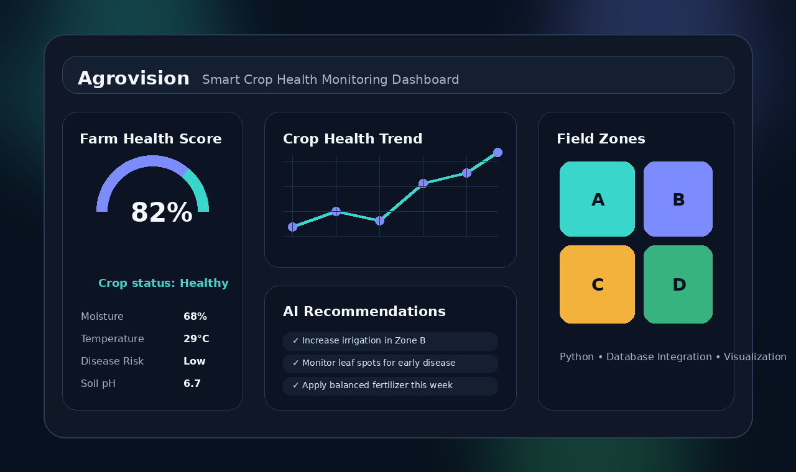
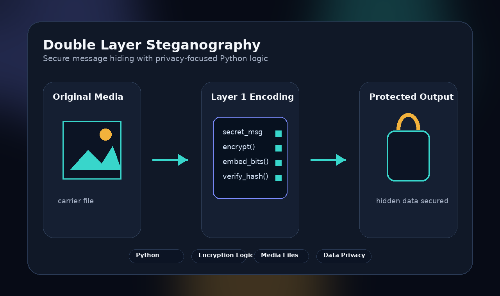

B.Tech Information Technology Student
Krisha Patel
6th-semester B.Tech Information Technology student focused on Data Analytics. I enjoy using SQL, Excel, Power BI, and Python basics to analyze data, solve problems, and build practical IT solutions.
Data Analytics + IT Learner
Current Focus
Data Analytics & IT Projects
SQL, Excel, Power BI, Python basics, database fundamentals and academic project implementation.
Profile Summary
I am a 6th-semester B.Tech Information Technology student with a solid foundation in IT and a strong focus on Data Analytics. I have hands-on academic experience in Python, database integration, data processing, and problem solving.
I focus on building logic, analyzing data, creating clean project workflows, and developing practical solutions that can contribute to real-world impactful projects.
Education & Certification
Bachelor Program
Information Technology
MBIT — Currently Pursuing
Current CGPA: 8.11
Higher Secondary
Completed higher secondary education with 52.38%.
From Kasturba Kanya Vidhyalay Anand
Gujarat
Secondary
Completed secondary school education with 73%.
From Kasturba Kanya Vidhyalay Anand
Gujarat
Certification
data anaylictics using microsoftexcel & SQL for data science
Completed Complete AI Tools Course and IBM SkillsBuild AI Tutorial, gaining exposure to modern web technologies and AI/ML fundamentals.
Technical Skills
SQL
Database querying, data extraction, filtering, and basic analysis using structured data.
Microsoft Excel
Data organization, spreadsheet analysis, formulas, and reporting basics for analytics tasks.
Power BI
Data visualization concepts, dashboard thinking, and business insight presentation.
Python
Basic programming, data processing logic, database integration, and academic project development.
Featured Project
Agrovision: Smart Crop Health Monitoring System
A smart crop health monitoring system built to analyze agricultural data and provide actionable crop health insights to farmers. The project processes health metrics, supports early disease detection, and presents data through a smooth user interface.

Agricultural data analysis
Crop health metric processing
Early disease detection logic
Smooth data visualization UI
Double Layer Steganography
A privacy-focused Python project that implements a secure data hiding method using double-layer steganography. It embeds secret messages within media files while preserving the original file structure and hidden information integrity.

Double-layer data hiding
Secret message embedding
Media file integrity focus
Privacy and security logic
Contact
Let’s connect professionally.
I am open to Data Analytics / IT internship opportunities where I can apply SQL, Excel, Power BI, Python basics, and problem-solving skills to real-world projects.